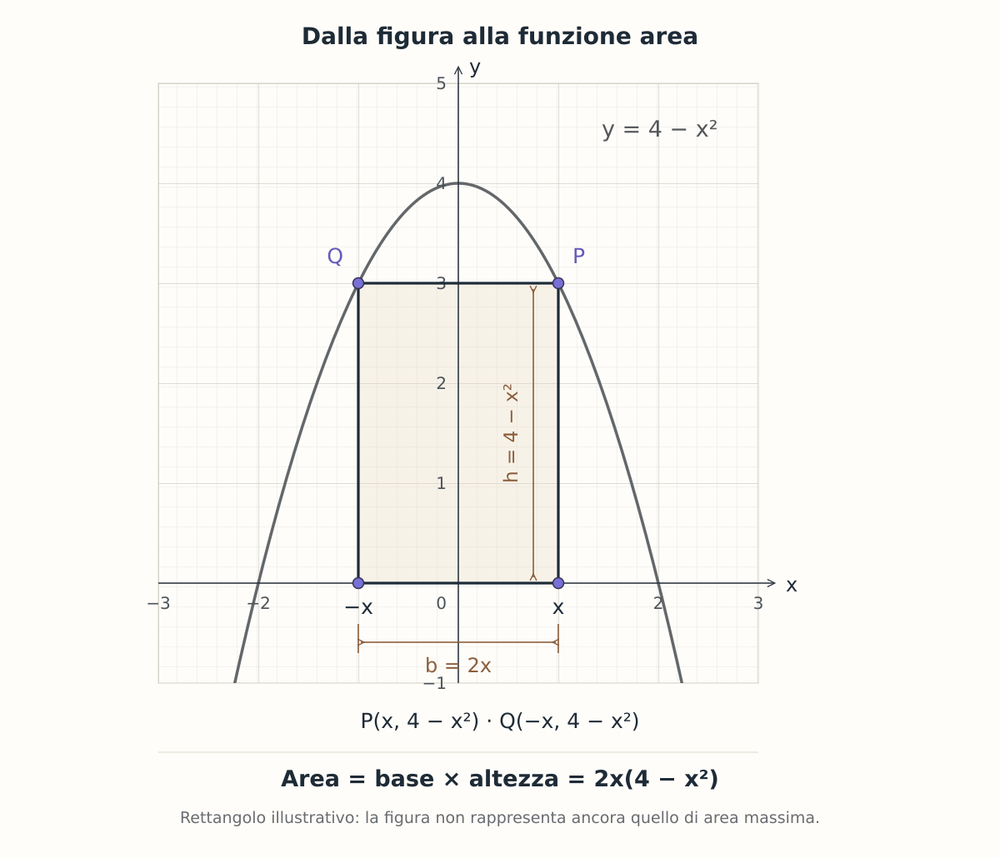

Dalla geometria a un problema di massimo
Comprendere come:
- scegliere una variabile geometrica;
- esprimere base e altezza in funzione di essa;
- stabilire il dominio;
- costruire la funzione area;
- utilizzare la derivata per verificare l’esistenza di un massimo.
Quale rettangolo ha l’area maggiore?
Consideriamo la parabola:
Nella regione compresa tra la parabola e l’asse x è inscritto un rettangolo con:
- la base sull’asse x;
- i lati paralleli agli assi cartesiani;
- il centro della base coincidente con l’origine.
Determina le dimensioni del rettangolo di area massima e calcola il valore di tale area.
Prima di aprire lo svolgimento, prova a disegnare la figura e a esprimere base e altezza utilizzando una sola variabile.
APRI LO SVOLGIMENTO RAGIONATO
1. Scegliamo la variabile e leggiamo la figura
Indichiamo con P il vertice superiore destro del rettangolo:
Poiché il rettangolo è simmetrico rispetto all’asse y, il vertice superiore sinistro ha ascissa −x.

La base non misura quindi x, ma:
L’altezza è l’ordinata del punto P:
2. Stabiliamo il dominio geometrico
Per avere un rettangolo con base e altezza positive deve essere 0 < x < 2. Possiamo includere anche gli estremi per studiare la funzione area sull’intervallo chiuso:
Per x = 0 la base è nulla; per x = 2 è nulla l’altezza. Agli estremi otteniamo quindi figure degeneri, entrambe di area zero.
3. Costruiamo la funzione area
Moltiplichiamo base e altezza:
4. Cerchiamo e verifichiamo il massimo
Calcoliamo la derivata:
I punti stazionari soddisfano:
Algebricamente otteniamo due valori:
Nel nostro problema x è la semibase del rettangolo e deve essere non negativo. Consideriamo quindi soltanto x = 2/√3. Nell’intervallo geometrico:
- A′(x) > 0 per 0 < x < 2/√3: l’area cresce;
- A′(x) < 0 per 2/√3 < x < 2: l’area diminuisce.
Si tratta quindi di un massimo. Poiché A(0) = A(2) = 0, il valore interno trovato è anche il massimo assoluto su [0, 2].
5. Calcoliamo le dimensioni e l’area
La base misura:
L’altezza misura:
L’area massima è:
Confondere x con l’intera base
x è l’ascissa del vertice superiore destro. Il rettangolo si estende da −x a x, quindi la base misura 2x, non x.
Un altro errore è accettare anche il valore negativo ottenuto dall’equazione A′(x) = 0, dimenticando il significato geometrico della variabile.
Prima la figura, poi la derivata
Il passaggio più importante è costruire correttamente la funzione:
A(x) = 2x(4 − x2).
La derivata può lavorare correttamente soltanto dopo che la geometria è stata tradotta correttamente.
Vuoi confrontare il tuo procedimento?
Se un passaggio ti ha creato difficoltà, puoi raccontarmi come hai affrontato l’esercizio e da quale punto vorresti ripartire.